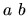

| Bundling Newspapers |
A statistical research company needs a program to produce instructions for an existing application that creates questionnaires about newspapers. The application requires instructions that are comma- delimited lists of newspapers, each list consisting of a subset of the set of newspapers in some metropolitan area. Your program will read a list of newspapers and produce this output in a particular order, and for subsets of some range of sizes.
Each dataset consists of a first line describing the sizes of subsets to be output, followed by the names of the newspapers, one per line. Each line is terminated by an end-of-line marker. The newspaper names will contain at most 30 characters each, and there will be a maximum of 12 newspaper names.
The first line will contain either a single asterisk in column one, one positive integer, or two positive
integers, the first less than the second. Any integers in this line will be no greater than the number of
newspapers to follow. The meaning of these is as follows:
* means show all subset sizes from 1 to the number of newspapers in the list  means show all subset sizes from a to b, inclusive n means show only subsets of size n
The output for each dataset should consist of the comma-delimited subsets of papers, one subset per line, grouped by subset size, and with a header line above each subset size group indicating the size. Print a blank line after each subset size group. Within a subset size group, the order of the lines of output should be listed in such a way that if the names of the first, second and third newspapers listed in the input file were A, B, C, etc., respectively, the output lines would be in lexicographic order (in the example above, A, B; A, C; A, D; B, C; ...).
Print a blank line between datasets.
1 2 3 Times Herald-Tribune Post New Advocate
Size 2 Times, Herald-Tribune Times, Post Times, New Advocate Herald-Tribune, Post Herald-Tribune, New Advocate Post, New Advocate Size 3 Times, Herald-Tribune, Post Times, Herald-Tribune, New Advocate Times, Post, New Advocate Herald-Tribune, Post, New Advocate